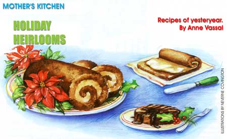
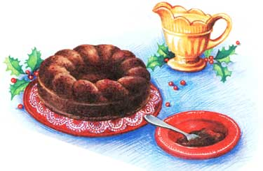
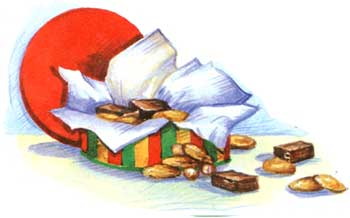

Somewhere between my grandmother's wedding silverware and an odd assortment of vintage tablecloths lies my collection of family heirloom recipes. Oil-streaked ink on yellowed pages gives me a glimpse of how, decades ago, my relatives provided more than food for their families; they created fond childhood memories. My grandmother's Christmas chocolate roll was my favorite. We would relish our delicious chocolate slices after Christmas dinner, knowing there wouldn't be second helpings. (I suspect that my grandma looked forward to those few remaining slices the next day as her small reward for preparing such a feast.) My husband, on the other hand, fondly remembers his grandma's recipe for chicken 'n dumplings, a Sunday tradition that began during World War II.
Just recently, my mother and I sorted through a box of family cookbooks and recipes dating hack to before the turn of the century. As I read my great-grandmother's favorite recipes and began comparing past and present methods of food preparation, it struck me that nowadays we sure have it easy. Back then, cookbook recipes contained few directions and great grandma had to rely on cooking tips from relatives. Much of the food was smoked, pickled and canned because it was difficult to keep it fresh in an icebox (thank goodness for Ziploc bags!). There was no such thing as an oven temperature until the first kerosene stove outdated the wood burner during the 1920s. Baking a pumpkin pie? You'd have to cook the pumpkin, since there weren't any canned goods. And men were seldom caught in the kitchen, unless to eat.
Well, we've come a long way, baby. Like old silver, heirloom recipes are a part of our heritage. Our ancestors prepared them with love to nourish their families, leaving us with memories that we'll pass on to our children. But in order to enjoy them today, a few alterations are necessary for the sake of healthy living.
I tried-and failed-to bake a chocolate roll from my grandma's 1930's settlement cookbook. Maybe it was the vague directions, or perhaps it wasn't her recipe after all. My next tack was to combine three recipes, one of which was from a 1972 Good Housekeeping magazine that I found at a garage sale.
Mocha Filling
1 pint whipping cream
2 to 3 tablespoons sugar
1/2 teaspoon vanilla
2 tablespoons sifted cocoa powder
1/2 teaspoon instant espresso powder
Using an electric mixer, whip the cream on medium-high speed until it starts to thicken. Add the rest of the in-
ingredients and beat slowly until it forms peaks. Taste and see if it needs more sugar. Immediately .. spread onto the cake (see below)
Chocolate Sauce
4-ounce bittersweet or semi-sweet chocolate bar such as Ghiradelli
3 to 4 tablespoons vanilla soy milk (not the 1 % fat)
In a saucepan, melt the chocolate over very low heat until just melted, being careful not to let it bum. Whisk in the soy milk until thick, adding more if needed. Drizzle hot over slices of chocolate roll.
Cake
5 large eggs, separated V cup sugar
£ cup cocoa powder
cup sifted unbleached white flour
teaspoon baking powder 1 teaspoon vanilla extra cocoa powder
Let the eggs sit at room temperature for about 15 minutes. Oil a 10" x 15" baking sheet or jelly roll pan and line it with waxed paper cut to fit. (Lay the waxed paper inside the pan and trace around it with a pen.) Preheat the oven to 350°F. Separate the eggs, putting the yolks and whites into separate mixing bowls. Add the sugar and vanilla to the bowl with the yolks. Sift together onto a paper plate the measured cocoa, flour and baking powder. Once the oven is preheated, beat the egg whites with an electric mixer on high speed until the mixture stiffens and peaks start to form. Set aside and immediately beat the yolk mixture on medium speed for about two minutes, until it looks like whipped butter. Slowly beat in the cocoa, flour and baking powder until just blended. Scrape the beaters and fold the egg whites carefully into the cocoa mixture using a rubber spatula or a whisk. (The whisk is easier but be careful not to over mix and deflate the egg whites.) Spoon onto the baking sheet and spread evenly. Bake for 10 to 12 minutes, until an inserted toothpick comes out clean; don't over bake or the cake will dry out.
While the cake is baking, lay an old dish towel on the kitchen counter (not terry cloth). Sift cocoa powder onto
the towel in the shape of the baking pan. Remove the cake from the oven and immediately invert onto the towel. Peel off the waxed paper, and starting at a short end, gently roll up the cake jelly-roll style into the towel. Lay on a wire rack steam-side-down for at least 30 minutes to cool. Prepare the mocha filling. Unroll the cake and leave it on the cocoa-covered towel. Spread on the filling, leaving about an inch free of filling on one of the short ends. Stan rolling without the towel on the opposite end until you have a tight roll. (Make sure your hands are dry so you don't smudge the cocoa-powdered side.) Lay seam-side down on a platter, cover loosely with plastic wrap and refrigerate for at least three hours before serving.
To serve, cut the roll into one-inch slices with a serrated knife, drizzle with warm chocolate sauce and enjoy.
This antique recipe is really more of a cake without any fat. The fat is in the sauce, which is why it's drizzled on the cake sparingly. This recipe is so simple, to make that the most difficult part is finding a metal Jell-O mold. I found a round one (8f" in diameter with a hole in the center) for $1 at the Salvation Army store, but you'll find you can usually borrow one from an elderly neighbor or relative. You can also use the individual-size metal molds, though they'll take less cooking time. You'll also need a vegetable steamer, which, if you don't already have one, can be purchased at most department stores for well under $10
1/4 cup raw cranberries
1/3 cup molasses
1/3 cup boiling water
2 tablespoons brown sugar pinch salt
1/2 cups unbleached white flour
1/2 teaspoon baking soda vegetable oil cooking spray
Set the cranberries aside. Put an inch or so of water in a large soup pot with a lid. Open the collapsible vegetable steamer and place it in the pot. The water should be just touching the bottom of the steamer. Place the pot on top of the stove and preheat the water. Place the Jell-O mold on top of the vegetable steamer to be sure it fits in the pot, then remove. Spray the interior of the Jell-O mold generously with cooking spray. In a mixing bowl, stir together the molasses, water, sugar and salt. Stir in the flour, baking soda and cranberries. Spoon into the Jell-O mold and place the mold in the pot. Adjust the heat to the lowest simmer setting, put on the lid and simmer for one hour (I actually steam mine for closer to 70 minutes).
The cranberry pudding is ready when an inserted toothpick comes out clean (test in a few spots). When you remove the lid, be careful not to drip water on the pudding. Remove the mold from the pan and place it on a cooling rack for at least 30 minutes. To release the pudding from the mold, loosen all the edges with a butter knife. Invert onto a waxed-paper-lined plate and wiggle the mold to loosen. If that doesn't work, use the butter knife to pry the pudding away from the sides of the mold in spots, then invert again. Slice into wedges and drizzle with brandy sauce.
*Note: I wrapped the leftover pudding loosely in a plastic bag and kept it on the kitchen counter for three days. It kept well the whole time, but I think it tasted best the day after I made it still fresh, though not quite as moist as the first day.
Brandy Sauce
1/4 cup unsalted butter cup
1/2 sugar
1/4 cup cream
1 teaspoon vanilla
1 tablespoon brandy (or rum)
In a medium saucepan, melt the butter and sugar on medium-low heat until it turns a golden color. Whisk in the cream and simmer a minute or so until the sauce has thickened. Remove from heat and stir in the vanilla and brandy. Drizzle over each slice of cranberry pudding. This sauce can he refrigerated until needed and then reheated.
Years ago, before I was married, my friend Sarah and I combined our efforts with a Christmas cookie baking day at my place. At the time, we had only one recipe apiece, so it wasn't exactly the Pillsbury Bake-off. Her Irish grandmother's recipe for snowballs had been her favorite holiday cookie when she was growing up in Chicago. I've reduced the sugar and fat, and although I'm not in favor of using margarine on a regular basis, it does make a lighter tasting cookie. I usually double the recipe and put some in the freezer for after the holidays.*
1/2 sticks butter or soy margarine (I use half butter half margarine.)
1/2 cup powdered sugar
1 teaspoon vanilla
1/2 teaspoon baking soda
2 cups sifted whole wheat pastry flour (or unbleached white flour)
1 cup quick-cooking oats (thin oats)
1 cup finely chopped walnuts or pecans
About an hour before baking, unwrap the butter and margarine and place in a large mixing bowl to soften. When the butter is soft, preheat the oven to 325°F. Using an electric mixer, beat the butter and margarine until creamy. Add the sugar, vanilla, and baking soda and beat again until smooth. Sift the flour into measuring cups until they're overflowing; level with the dull side of a knife. Slowly mix in the flour until blended. Scrape the beaters clean and remove the bowl from the mixer.
Using a wooden spoon, stir in the oats and nuts. Roll the dough into one-inch balls and place an inch apart on two large cookie sheets. (If the dough is too sticky, put the bowl in the freezer for about five minutes.) Bake 20 to 25 minutes, until light brown. Let cool for one minute. Roll each ball in a shallow bowl of powdered sugar until covered. Cool thoroughly (about one hour) on paper towels before placing them in tins and storing them in a cool place.
Storing and freezing snowballs: These cookies taste best for the first week, after which they tend to lose flavor. Pack the cookies in a metal tin or plastic freezer container, placing a piece of wax paper or plastic wrap between each layer. Put plastic wrap over the top layer and store in a cool place or freeze up to one month.
A co-worker used her mother's recipe for these holiday cookies, a big hit at last year's Christmas party. The recipe called for maraschino cherries, but I replaced them with dried cherries for a healthier cookie without red dyes. What I like about this chewy cookie is that the only fat is in the walnuts (go ahead and put them in; nuts are good for you in moderation).
2 cups pitted dates (Make sure they're pliable and not hard.)
1 cup walnuts
1 cup dried cherries or cranberries
2/3 cup confectioners sugar
1 teaspoon vanilla
2 egg whites, not beaten
Preheat the oven to 350°F. Line two cookie sheets with parchment paper. Chop the dates and nuts into pieces. In a large bowl, mix together all the ingredients, stirring in the vanilla and egg whites last. Drop the batter onto the parchment paper with a tablespoon, so the blobs of dough are about 2" in diameter. Flatten the cookies slightly with the spoon and shape them into circles, if needed. Place a dried cherry or cranberry in the middle of each one if you like.
Bake for 15 minutes until the edges are lightly browned. Let cookies cool on the baking sheets for at least 10 minutes (they'll harden as they cool) before removing them from the parchment with a pancake turner. Cool completely before storing in an airtight tin, with wax paper between the cookie layers. They'll keep in a cool place for two to three weeks. I don't recommend freezing these cookies.
Our grandmothers didn't have a large freezer to get a jump on the holidays, but we can start our holiday baking shortly after Thanksgiving to avoid the last minute rush.
To store and freeze cookies, stock up on metal cookie tins or square/rectangular plastic freezer containers when they're on sale at discount department stores. (Buy decorative smaller tins to use for gift cookies.) Make sure the cookies are completely cooled. Cut bars into small squares. Line a cookie tin or plastic container with enough plastic wrap so that it hangs over the sides of the tin. Line the inside of the container with plastic wrap, then pack the cookies in, placing a piece of wax paper or plastic wrap between each layer. Wrap plastic wrap over the top layer and store in a cool, dark place or freeze up to one month. Cookies will stay fresher in a zero-degree deep-freeze than they will in your refrigerator freezer, where the door is constantly opening, causing the temperature to fluctuate and food to defrost.
|
 |
 |
 |